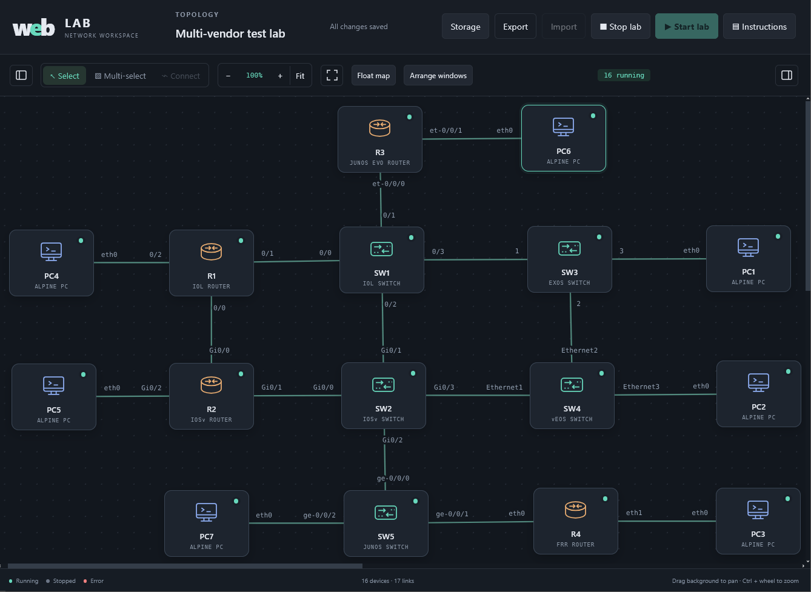
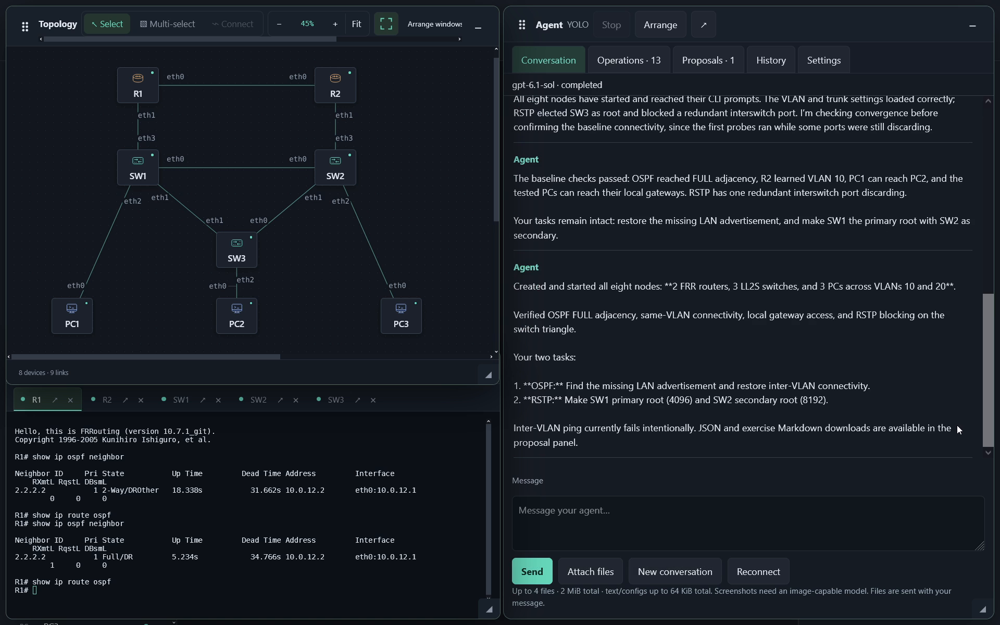
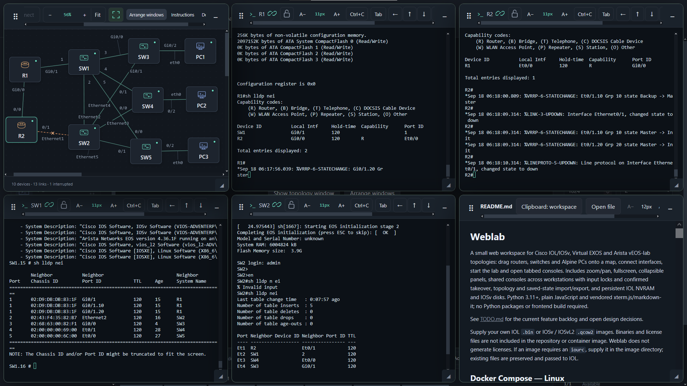
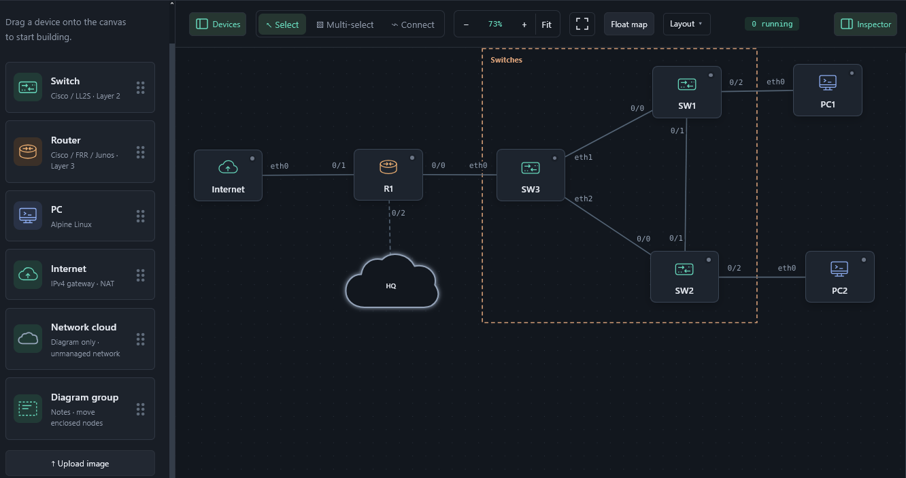
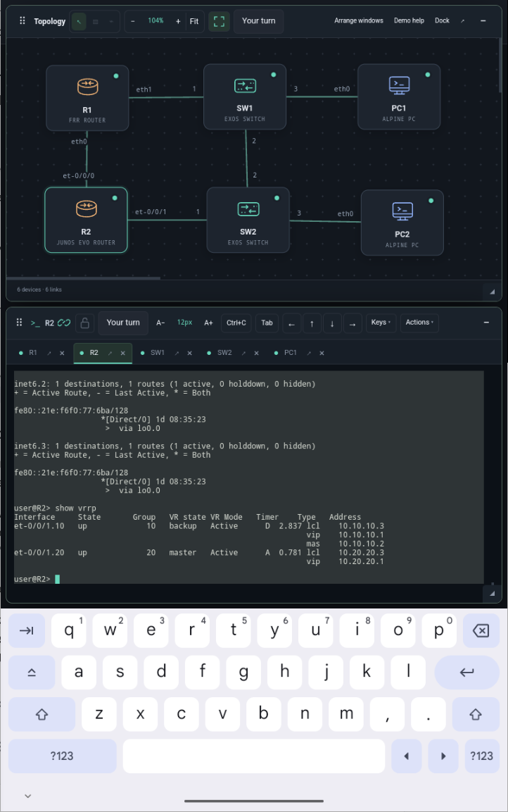
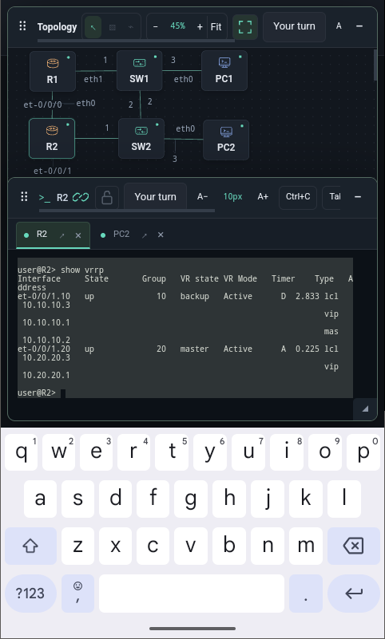
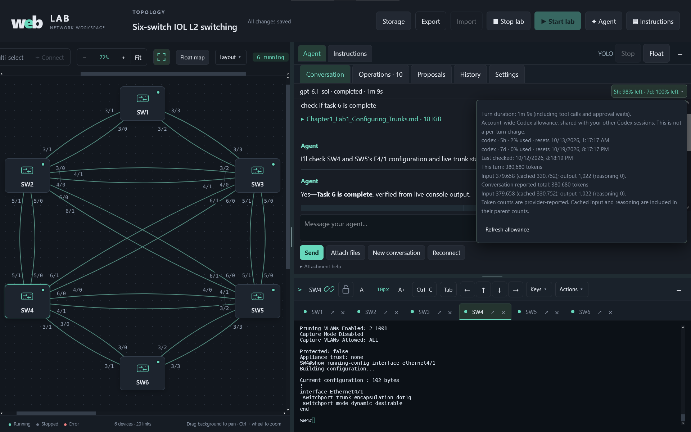

TEST A FAILURE
Change a link. Watch the response.
Introduce directional frame loss or use supported carrier controls. Inspect the consoles as the network reacts, then restore the link.
Link controls and supported profiles ↗OPEN SOURCE / SELF-HOSTED / NETWORK ENGINEERING
Wire the topology. Work the console.
Understand what happens between them.
Run real networking software and virtual network operating systems on your own Linux host. Build topologies, access live consoles, and automate your lab with AI.


Inspect full size ↗01 / THE WORKSPACE
The map explains the connections. The consoles show what the devices are doing. Arrange both around the task at hand.

Inspect full size ↗
View full size ↗TEST A FAILURE
Introduce directional frame loss or use supported carrier controls. Inspect the consoles as the network reacts, then restore the link.
Link controls and supported profiles ↗KEEP THE EXPERIMENT
Share topology JSON or export supported saved device storage as a ZIP after stopping the lab. Keep exercise files separately; images and licenses stay with you.
Choose an export format ↗Console key shortcuts and movable panes also work on smaller screens. These captures show the restricted hosted preview.

View full size ↗
View full size ↗Screenshots of the shared live preview, which has restricted controls.
Try it in your browser ↗02 / OPTIONAL AGENT
Build a practice lab or configure an existing one with Ollama or OpenAI. The Agent issues the console commands; devices produce the output. In these recordings, the user navigates the workspace and grants permissions without manually typing console commands.
FRR routers, an LL2S switch triangle and Linux PCs. Two OSPF/RSTP tasks are intentionally left for the student. Session YOLO is enabled.
Attach an exercise, review console access, then inspect switch configuration and the Agent’s explanation. The approval dialog offers optional session YOLO.
The Agent is an optional companion for your self-hosted workspace; it is not enabled in the restricted hosted preview. Individual approvals are the default. Agent output needs verification.
Bring your provider. Use an allowlisted Ollama endpoint or sign in to OpenAI. OpenAI requests consume your account’s existing allowance; Weblab supplies no additional quota. Check setup and plan requirements ↗
Keep the topology full height beside Agent and consoles. The activity line shows remaining OpenAI account allowance and elapsed time; open its details for provider-reported tokens and reset times. Local-model tokens appear when the provider supplies them.

03 / SHARED ACCESS
Enable optional authentication for a trusted group. Publish the exercise once, coordinate console ownership, and let each role do its work.
| Account / role | Access to the shared lab |
|---|---|
adminAdministrator | Prepare topologies, publish instructions, manage the lab, review activity and use the optional Agent. |
userWriter | Type in consoles, start or stop nodes and operate link faults. Topology structure and instructions stay under admin control. |
guestReader | Observe the topology and shared console output. No console input or lab operations. |
Authentication is off by default. These are shared accounts in a shared lab, with common console output. They do not provide isolated user environments.
AAA is an initial implementation. Named users, a live admin panel, per-user node and instruction assignments, and delegated writer Agent access are planned. They remain planned; no delivery date is set.
Discuss a teaching or team-lab use case ↗04 / LAB RECORDINGS
See Weblab.Network go from installation to a running multi-vendor lab, with floating consoles and a link-failure exercise, in under two minutes.
The video shows the full workspace. The hosted preview is shared and has restricted controls.
Watch the original recording at its original pace: Docker setup, image upload, topology editing, live consoles, link faults and lab export.
05 / INSTALLATION
Start with containers for routing and switching, or bring supported vendor images. Weblab runs the devices on your machine and the workspace in your browser.
HOST REQUIREMENTS
Follow the guide for host permissions, persistent storage and remote access. The Agent is a separate Compose option.
Use Weblab FRR routers with LLDP, read-only SNMP, VLAN routing and IPv4 VRRP alongside LL2S switches and Alpine PCs, without KVM. Supported vendor images and licenses are user-supplied.
Device profiles ↗Build a topology or import an example. Check device state from the consoles, and save configurations before stopping.
Start with FRR OSPF ↗Cisco IOL / IOSv · Arista vEOS · Virtual EXOS · Juniper vJunos · FRRouting · LL2S · Alpine
git clone https://github.com/weblab-network/weblab.gitFor your host or a trusted group. Review the installation guide before allowing remote access. Vendor images and required licenses are user-supplied, except for the separately documented optional EXOS sample distribution.
WEBLAB / OPEN DEVELOPMENT
Try the workspace, bring a real lab problem,
or contribute a fix.